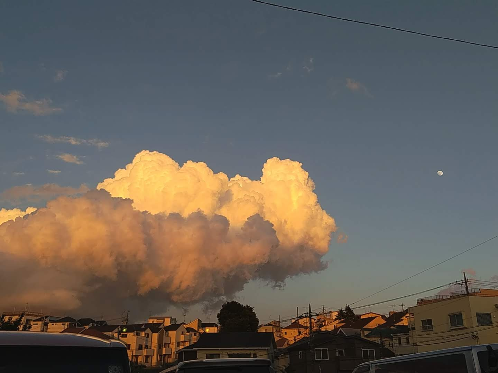

うさきち
@usa_tan
・10分前
まじで部活辞めたい
0
0
1
まきおき
@okimaki
・1時間前
俺、顧問嫌すぎて普通に部活辞めたいんだが、、、

0
0
1
ピッチょん
@pichon
・16日前
朝6時集合はまじでクソ部活。普通に辞めたい
0
0
1
たかし
@takashi
・20分前
今日の部活、もうだるすぎる…
0
0
1
ゆい
@yui
・30分前
もう疲れた。授業も部活も全部パスしたい
0
0
1
さとる
@satoru
・45分前
部活無理、帰りたい…
0
0
1
リョウ
@ryo
・50分前
なんで毎日こんなにだるいんだろう？
0
0
1
えり
@eri
・1時間30分前
部活の練習、体力以上に精神的にキツい
0
0
1
じゅん
@jun
・2時間前
今日は部活休みたい気分。まじでだるい
0
0
1
あきお
@akio
・2時間30分前
もう、練習始まるの見るだけでやだ
0
0
1
みさ
@misa
・3時間前
先輩たちの言うことも、何もかも無意味に感じる…
0
0
1
こうじ
@koji
・4時間前
部活も勉強も、もう全部やめたい
0
0
1
ひろし
@hiroshi
・5時間前
毎回の部活が重すぎる。息が詰まる
0
0
1
まなみ
@manami
・6時間前
部活辞めたら平穏な生活が送れる気がする
0
0
1
ゆうた
@yuta
・1日前
疲れた、だるい、もう行きたくない
0
0
1